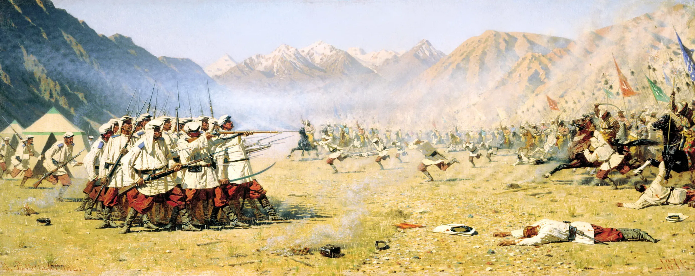

Here is the info about the painting from Google Arts & Culture
The painting is located in St. Petersburg in the Russian Museum,formerly the Russian Museum of His Imperial Majesty Alexander III. The Museum opened in 1896.
The major reason for Yermak's colonial expedition was fur trade. Note what Russians already have in the front boats (fur pelts). Russia was the major fur supplier on the world market until the European colonization of North America. The Russian government received income from the fur trade through two taxes, (1) the yasak (or iasak) tax on natives and (2) the 10% "Sovereign Tithing Tax" imposed on both the catch and sale of fur pelts. Fur was in great demand in Western Europe, especially sable and marten, since European forest resources had been over-hunted and furs had become extremely scarce.
Yermak did not serve the Russian tsar directly. He was a mercenary for the Stroganov family, wealthy merchants who made their fortune in salt production and owned multiple salt mines in the Urals (another colonial extraction industry of the empire). The Stroganovs hired Yermak and his gang of Cossacks to protect their lands. Yermak came with his private army (540 Cossacks) and in late 1582, started his colonial expedition from the Stroganov residence in the Urals. And yes the dish (Beef Stroganoff) is named after one of the members of the Stoganov family.
Here is the info about the painting from archive.com